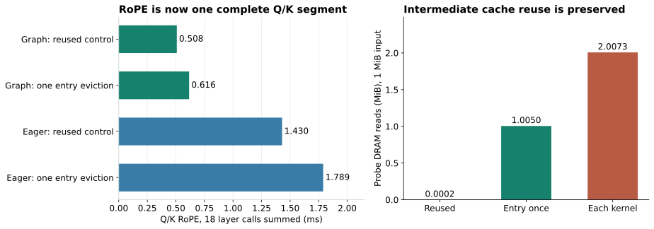
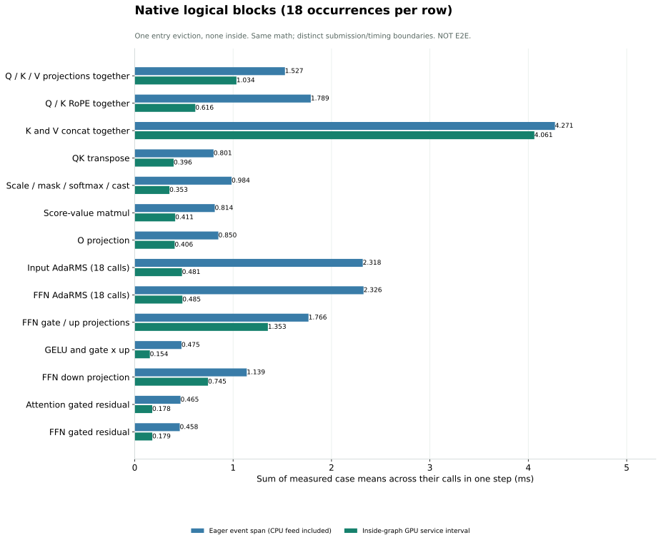
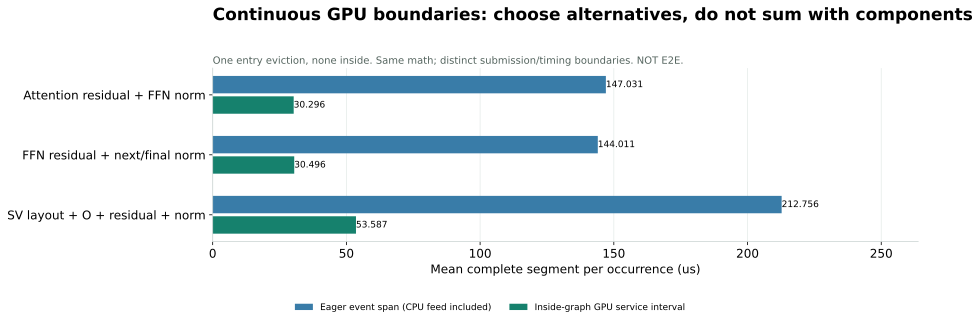
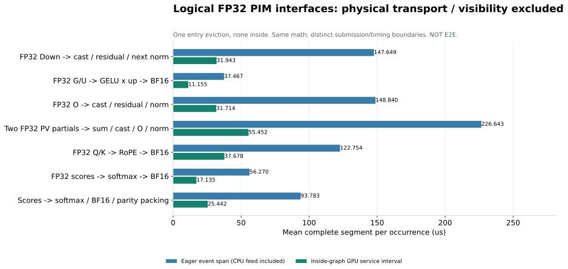
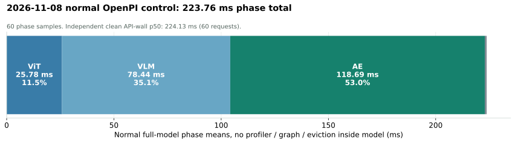

2026-11-08 · Thor 实测 · 替换逐 kernel 冷缓存口径
π0.5 H16 连续 GPU 段延迟
MHA8 · head_dim256 · step10 · B1 · AdaRMS 条件预计算缓存 · OpenPI 原生算术
0.616 ms18 层完整 Q/K RoPE，Graph 段内计时合计
1.789 ms相同 RoPE 的 Eager 段计时，含 CPU 提交间隙
458 段 × 4 口径每段每口径 20 次，输出精确一致
修正的是边界，不是把旧时间除以 kernel 数。 每个完整段入口执行一次 256 MiB 缓存驱逐，之后连续计算，段内没有驱逐；驱逐本身不计时。它是经过探针验证的缓存状态近似，不是已接通 PIM 的物理交接或完整 E2E 实测。
01 / RoPE 的小 kernel 连续运行
一次 Q/K RoPE 段完整包含两组 mul、neg、cat、mul、add。18 层分别实测，不再让 180 个应用 kernel 各自从冷状态开始。位置表生成仍单列一次：Graph 入口驱逐下为 0.0225 ms；Q/K 应用加位置表的合计为 0.6385 ms。这是各段均值合计，不是整段 AE 时间。

两 kernel 探针的输入为 1 MiB。地址复用、入口一次驱逐、每 kernel 驱逐的 DRAM 读取中位数分别为 224 / 1,053,824 / 2,104,832 bytes，支持段内中间结果得到缓存复用。只验证这类驱逐近似，不表示每个模型张量的全部字节都必然来自 DRAM。
旧数据使用 NCU、新数据不使用 profiler，提交/计时方式也不同。因此不能把新旧差额全部解释成缓存收益，更不能由此直接宣称 PIM 加速比。仍未做 RoPE kernel 融合，Graph 只改变提交方式。
02 / 原生逻辑块逐层测量
保留原生精度、形状与实际张量 stride。Q/K/V 一组，Gate/Up 一组，RMSNorm 含全部归约/调制/cast，softmax 流程含缩放/mask/cast，GELU 与乘法一起测。矩阵、布局和外围算子也单列。

完整基础分块表
表中合计已经乘入实际调用次数；不能再乘 18，也不能把隔离测量的各块之和当作真实一步延迟。静态 suffix 掩码已预分配，CPU/H2D 创建不在分段计时内。
03 / 按真正的连续计算边界组合
残差之后没有 PIM 运算打断时，把残差与下一次归一化连续执行。O 投影留 GPU 和放 PIM 是两个备选出口，不能同时收费。

以下组合替换重叠的基础行，不能重复相加。 例如“FFN 残差 + 下一次归一化”覆盖下一层入口 norm；最后一层覆盖 final norm。入口第 0 层 norm 仍需单独一次。
FP32 逻辑接口候选
另外提供 PIM FP32 输出转换、PV 两部分求和、以及 P 补齐到 992 列后按奇偶 KV 分片的连续段。每个 head/rank 的 P 输出为 [16,496] BF16。FP32 数值由原生输出构造，只验证 GPU 函数与 Graph 结果一致，不是数值 PIM 仿真或物理 bank 布局校验。

同学仓库 xinyao_1104@8764996 的参考方案已经把 RoPE 放在 PIM，不能再计 GPU RoPE；本页 RoPE 行供 GPU-RoPE 替代分工使用。P 分片包含逻辑 pad/gather/cast，不含实际 DMA 或 bank 地址写入。PV 求和假设两个已解包的稠密 FP32 buffer；物理输入解包仍未测。
04 / 两种计时边界不能混用
- Eager：CUDA events 包围整个原生函数，保留 Python/CUDA 提交导致的 GPU 执行间隙；不是纯 kernel busy time。
- Graph：同一函数经过预热和输出校验后捕获，计时 event 位于 graph 内部（external=True），记录从段内首 event 到末 event 的 GPU 服务区间。CPU graph launch、graph 构建和外部同步不在其中；没有 torch.compile 或算子融合。
- 入口驱逐：每次只有一遍 256 MiB .ca 读流，且在计时前完成。连 GPU 常量/权重缓存也会被扰动，不能称为选择性冷输入或真实 PIM 交接。地址复用列只作固定缓冲区控制，不代表完整模型自然缓存状态。
- 输入/权重读取、段内中间读写/cast、输出 store 的实际执行成本已包含；未测输出全部排空到 LPDDR、PIM 可见性、外部 DMA、dispatch、bank 解包/写入或与后台 VLM 的争用。
- 空 graph 的计时均值为 1.424 µs，作为参考保留，未做减法修正。非常小的段需考虑计时节点/调度粒度。
- 实际部署需要固定 buffer/每 step 的 graph 或参数更新；这些管理成本未计入图内服务时间。若混合系统使用 Graph，纯 GPU baseline 也应采用可比优化后再归因 PIM 收益。
今天重新测的正常模型控制组

完整模型仍是原生 eager、自然缓存，不启用模型级 Graph。clean wall p50 224.134 ms；60 次 phase 的均值合计 223.757 ms，AE 均值 118.689 ms。不能把图内分块数字直接替换这一完整执行时间。
386 个主段加 72 个补充接口段，共 36,640 次计时，输出精确相等（torch.equal）。初始化失败的 01 记录保留并排除；有效主采集为 02，接口补充为 interfaces_01。没有修改共享运行时、权重、系统时钟或同学的仿真代码。
中文说明与复现 · E2E 统计简表 · 完整 JSON · 基础块 CSV · 连续段 CSV · 接口候选 CSV
仓库：AlinaWXY/pim_vla_simulator
分支：thor-data/pi05-openpi-mha8-h16-s10-segments-20261108
旧的 2026-11-05 数据保留，本批另存，不覆盖。